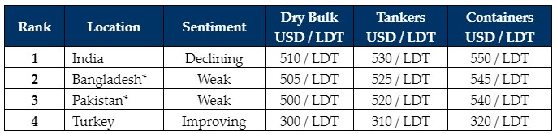

inWeekly Demolition Reports06/11/2023

As we progressively approach Diwali holidays – inflation, fundamentals, currencies (except in India),vessel pricing, and overall weakening sentiments certainly seem to have beset across all of the sub-continent ship-recycling destinations (even Turkey to an extent), which have certainly cooled by about USD 20/LDT (and then some) over recent weeks, all while presenting a dichotomy of current times where both India & Bangladesh (steel plate prices) reported surprising increases this week.
Seemingly on the back of global steel plate prices, which have reportedly improved by about 3% over the course of the week, there is a growing optimism that the ship recycling industry could potentially be set for a firmer conclusion to 2023, especially if current steel plate trends continue optimistically and have simultaneously elevated vessel prices upon the conclusion of Diwali holidays / November. Moreover, according to recent reports from the ground, Turkish import steel prices have also appreciated by about USD 11/T in this week, and vessel prices have (directly or indirectly) reflected this firming by improving about USD 10/MT on their own, placing all offer levels from Aliaga back in the USD 300/MT space once again.
Notwithstanding, there remains the ongoing global shortage of tonnage as mostly older, 90s built Bulkers are being introduced for recycling (along with the odd container unit), whilst supply is yet to hit acceptable levels for the year. This may certainly change as we head into 2024 and when all markets are hopefully firing and continually improving / upgrading their facilities to HKC standards, in order to have the necessary capacities for the anticipated volume of vessels that is expected to enter into the recycling space next year.
Overall, after a barren last quarter (in terms of supply) and a recycling market that has declined from the peaks seen earlier in the year above USD 600/LDT, only to lose over USD 100/LDT in value in a few short months over the summer, industry players all are hoping for a positive conclusion to the year from the most stable recycling market – or at the very least, an optimistic welcoming of Q1 2024.
For week 44 of 2023, GMS demo rankings / pricing for the week are as below.

📄 Download PDF: Ship-recycling-market-insight-week-44-2023-Diwali-Dismay.pdf
Source: GMS,Inc. ,https://www.gmsinc.net/gms_new/index.php/web